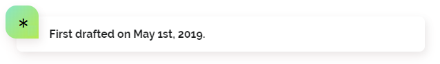
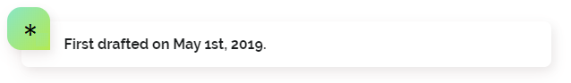
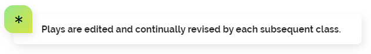
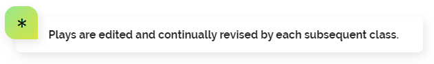

Policy Innovation Lab Playbook This playbook is designed to provide both students and future partners of the lab with guidelines, tips, and strategies for success during the course.

 

One of the most difficult things for new students to adapt to in the early weeks of the course is the speed at which projects tend to evolve when agile methods and user centered design are applied. This is equally difficult, if not more so for partners to adjust to.
Needs are verbs; solutions are nouns.
As you review a project brief for Policy Innovation Lab, start with understanding what the users need. If you think about these needs as verbs instead of nouns (e.g., "I need to escape the rain" instead of "I need an umbrella), you will open up the realm of possibility for what you and your team can create as solutions that serve real needs.
New ways of working, especially those that use human-centered design can feel unfamiliar and uncomfortable. Lean into it. Human-centered design and agile require a shift in mindset. Students may need to change focus after talking to project stakeholders and confirm different needs. That's ok. This reframing of the original problem can not only lead to identifying the real issue but also result in work that is more nimble and uses resources more efficiently and effectively.
Frame the problem you're trying to solve through the point of view of the users.
For you and your partners this means putting yourself in the shoes of your users when reviewing the initial brief for the course. Focus on the problem you are trying to solve, and avoid solutionizing. Instead, try to as clearly as possible identify the real underlying problem. Having a user-centric mindset will get you on the same page as your team and ultimately create MVPs that have greater impact.
Avoid being so committed to the idea you had in week one that you can't see the real solution right infront of you in week four.
Be open to user research.
Students need to do user research activities, like interviewing and prototype testing, in order to practice human-centered design. User research will also lead to greater impact. As you develop your partners for Policy Innovation Lab, ask various stakeholders if it would be ok if students reached out to you during the semester. Also be open to students utilizing or developing their own contacts for user research.
Set expectations with your partner early and keep the process transparent. You have a responsibility to the team working on your project. Being on the same page with the partner about what they expect and what we can deliver is crucial. A lot of time and effort can be wasted if the group is working under different assumptions than the partner.
Keep checking in with partner as project evolves.
Your project will probably change over time, be sure to keep your partner in the loop as it does. This sets clear expectations for both of you and allows you to incorporate their feedback on every iteration, instead of surprising them at the end with a product they do not want or need.
Understand the difference between your partner and your end-user.
Your partner is likely asking you to create something that they can then take to distribute to a third party. Understand that your partner may not actually know exactly what the end user is looking for. Push to talk to end users and understand their needs. partners ultimately want to deliver something with utility and so it’s in your best interest to really make something users will benefit from.
Dedicate one main partner contact.
This will usually be the PM, but its important to have one group member be the partner contact for the entire group. This streamlines partner communication and cuts down on possible confusion and partner annoyance (this can happen if the partner is getting multiple emails from multiple people telling them the same thing, or worse, different things!).
 

It is very easy to pursue projects that are low impact with a manageable scope or that have high impact but an unrealistic scope. It is vital to identify a deliverable that has a manageable scope with a moderate to high impact.
Be realistic about what you can complete in the time frame that will be most impactful and get partner feedback. With scoping as you work toward your final deliverable keep a master document that has all the information so you have a nice organized document of what was accomplished and what is left to do to hand off to the partner
Think globally act locally.
There’s a saying that programmers use – think global program locally. It means keep you vision big and keep it in front of you. But prototype small and lightweight. The prototype is a means to get people talking about what they need. A prototype triggers a richer discussion that isn’t possible to have by simply talking about an idea. Let your insights from interviewing people take the lead and guide you into promising directions.
At first, you can think using a public Kanban board or Slack is odd. However, as we prepare to be policymakers and civil servants, it's important to get comfortable with transparency about the process (since taxpayers are entrusting us to make decisions on their behalf). Also, these are pretty cool tools to learn.
Keep prototyping and prepare partner facing documents with a lot of check out. Know from the beginning all your materials and organizing channels are going to be available to professors, partners, and in many cases, the public. Getting your mind around this early can think about how best to communicate and organize documents and organizing tools.
Set team protocols, expectations, and roles early. Stick to them. This should be completed very early on. In addition, Retrospectives should be used to continue to work on these expectations. If your team is going to use Slack, then stick to it. If your team plans to use email, then use email. Ensure each team member is receiving the communications and can stay in the loop.
Though sometimes roles make people feel like they’re pigeonholed into doing one type of work, they’re incredibly important for delegation and assigning responsibility. It’s simply more efficient. This doesn’t mean that that person has to do all the heavy lifting of that role (the Research lead doesn’t have to do all the research). Instead they are responsible for making sure the work is delivered on time every week. On the flip side, roles don’t mean you are free to turn down other types of work that don’t fall into your “lane.” Everyone should be an individual contributor for an even number of tasks.
Makes sure that your group sits down as soon as possible and establish who will do what; you will want a project manager at the very least. This will help everyone focus on what their strengths are and make sure that no one is duplicating efforts. It also helps team moral as everyone will know what they need to do.
Remember that things tend to get busy in waves at CMU and each team member may not be able to contribute substantially each week. Plan for this reality so that it doesn't impede your group's progress. Team members should communicate openly about their expected contributions and do their best to pick up slack when they have time.
What’s your superpower?
Before you start working, consider going around the table and asking, “What’s your audacious goal for changing policy?” Find out what people’s dreams are. Because this course is about setting a bold vision and seeing how far you can get. Who is to say your vision can’t be something bold like “double voter turnout in presidential elections by 2030”? What if you do discover something incredible and becomes bigger than you ever could have imagined.
Set team protocols, expectations, and roles early. Stick to them. This should be completed very early on. In addition, Retrospectives should be used to continue to work on these expectations. If your team is going to use Slack, then stick to it. If your team plans to use email, then use email. Ensure each team member is receiving the communications and can stay in the loop.
Assign "owners" of deliverables and stick to them
This class can have a lot of deliverables (both partner-facing and non-partner-facing) depending on your partner and what the final work product is. Making sure you know who is responsible for what will make turning in deliverables and getting things done much easier.
Assign work to individuals and set intermittent deadlines
Clear tasks and deadlines for individuals can make the process more organized, especially for large groups. You can also avoid situations where tasks are not completed until the last minute or not at all because there was no clear owner.
Establish accountability
Summary: Developing and ensuring continued trust among team members is essential. A well-established team structure, no matter the size, is crucial for effective collaboration. This does not necessarily need to be specific roles for everyone, but encouraging cross-functionality while outlining certain responsibilities will foster a more rewarding experience.
Maintain reasonably frequent communication with other team members
Between other obligations and busy schedules, try to touch base with other team members frequently outside of class to ensure you are not recreating work or miscommunicating. This will ensure you are ready to speak with your partner or share updates when asked in class.
Don’t be afraid to scrap a potential deliverable if it no longer makes sense. These fast-moving projects mean you often must start prototyping before you have a full enough picture of the issue. This means that you may have to rethink your deliverable part-way through and that is fine.
Defining failure criteria is equally as important as determining success criteria.
Summary: This course is process-driven. Process requires learning from mistakes and pivoting. This process is motivated by the agile methodology that necessitates determining acceptance criteria for various project phases. The same should be done with failure criteria. It’s important to learn how to fail well; knowing when to walk away and what to learn from those failures.
Develop a flexible, iterative timeline early. The weeks will fly by being able to look ahead and think about what is happening the following week can help you more effectively manage your time. Make sure you know the progress and the steps in the process and map out deliverable due dates so that you can ensure you are meeting them. That means checking syllabus and working with professor and partner, so you know what deliverables they are expecting throughout the semester. Read up on Scrum and Agile methods so you know what to expect and assign roles to complete task.
Learn to pivot.
There's inevitably going to be a partner meeting or interview or article that you read that makes you think you're trending in the wrong direction (it might even be week 4). But it's okay to pivot (strategically). All the work you did wasn't for not.
Be flexible and comfortable with change.
As you continue to develop your project and engage in user research, what you thought you had in mind of your end deliverable will constantly evolve and change - and this is OK!
Be comfortable with change, even if it means starting over.
The initial understanding of the project can change quickly, either through interactions with the partner or through user interviews. Be prepared to adapt your materials to meet new needs. All progress is good progress, and will help create a strong product in the end.

Embrace user research and what it means. Keep your plan user-centric so that any pivots stem from user needs
Reach out to users early on.
Understand user needs and validate your key assumptions with them as early as possible. It will help your team identify a more suitable approach to the problem and align your goals with your partner. Synthesis your learnings and findings and leverage them to inform your design decisions. While the agile mindset helps you “build the thing right,” user research empowers you to “build the right thing.”
Keep testing and interviewing.
It's never too late to do a user interview. The class length is short, and some interviewees may not reveal themselves until the end. Even if they do not directly impact the direction of your project, the information gained will still be valuable for the partner and could influence the next stages.
More often than not, projects will be non-linear. Keep moving forward.
Each time you receive more information use this as a chance to enhance or potentially recreate your product. Learning more from your partner will help shape how you continue your work, even if this means pivoting to a new direction.

Encourage teams, users, and facilitators to keep more options on the table
Often project teams, partners, and other stakeholders get entrenched in their respective ideas for what the final outcome should be. Being able to reconcile “ideal outcomes” with prototypes and minimum viable products throughout the agile process is essential for success. Tons of research exists on the value of assessing multiple alternatives before making decisions. If all invested parties can consider more options throughout the duration of the project, collaborative output will likely be more productive and of higher quality.
Follow the problem where it goes
Unless you are Steve Jobs, your initial hypothesis is going to be wrong the moment you talk to a user. Our first guess about why a problem is happening and what could solve it is usually wrong. This is because people are complex, and they make decisions in random and unique ways. The users are going to give you insights that come from unexpected places. If you think you’ve found something interesting, you have. Dig deeper and learn more about it. If you think the user research does not support your idea, then pivot. Or think of another angle to approach your questions. People are interesting and they will always reveal, directly or indirectly, something valuable to learn.